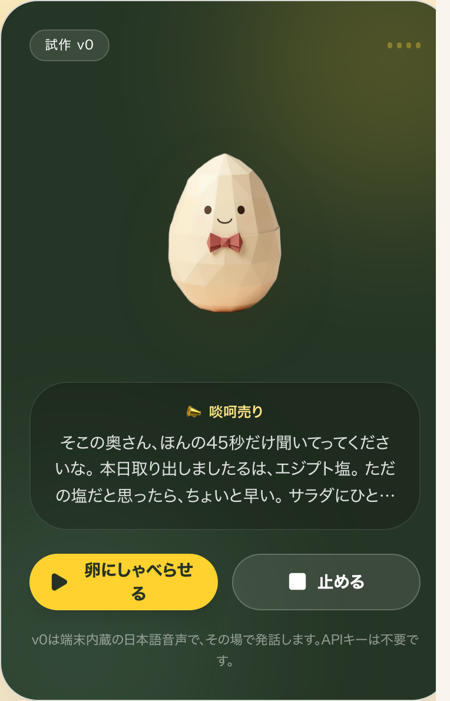
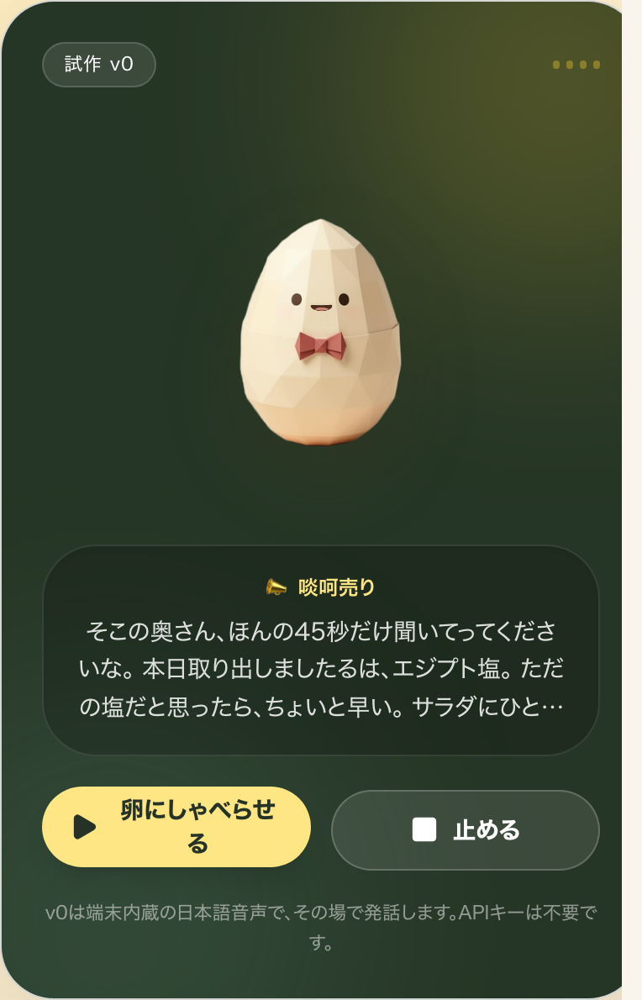
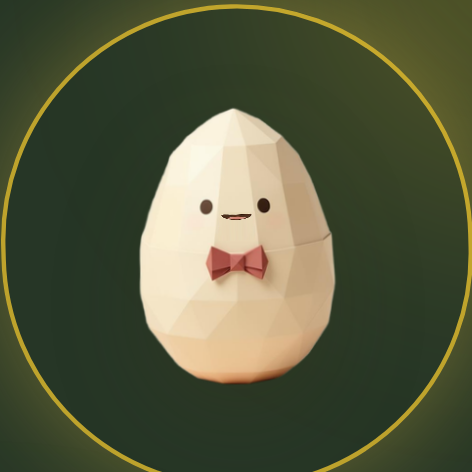

| 確認項目 | 結果 |
|---|---|
| 口が台詞の母音で動く（/talking-egg） | dev headless 実測で scaleX/scaleY が変化・前後スクショあり |
| 音声コンシェルジュ枠に喋る顔 | 実装済み。旗 ANNAISHO_VOICE_CONCIERGE_ENABLED=false（店主指示 09-29）のため本番では非表示 |
| サロン写真の口（xAIの声） | 既存部品 TalkingAvatar が本番で稼働中（今回は触っていない） |
| prebuild の関所（check-cover-truth / check-i18n-parity） | HARD 0件・4言語そろい |
| main 合流 | dd0a62988（2026-10-18） |
| Lovable 公開 | 押す係(kohyou_osu)は自動で押そうとしたが Lovable の鍵が切れている（18:48 実測 401 Not authenticated・鍵の取り直し 400）→ 公開待ち。鍵が戻れば押す係が自動で押す |